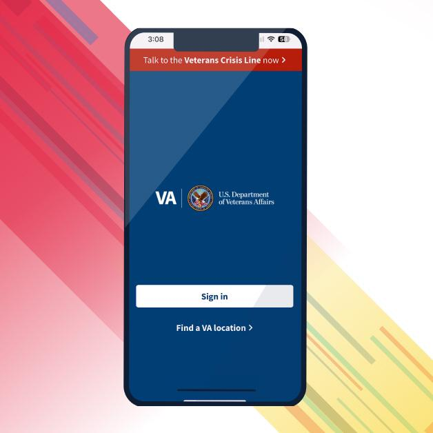

Welcome to VA.gov
Let us help you get started
Whether you’re a Veteran, service member, or family member, we’re here to help you get the care and benefits you deserve.
Get started with VACreate an account to manage your VA benefits and care in one place — any time, from anywhere.
Search
Other search tools
Top pages
- Check your claim, decision review, or appeal status
- Manage your health care with My HealtheVet
- File and manage travel reimbursement claims
- Review your payment history
- Download your benefit letters
- View your disability rating
- Manage health appointments
- Verify your school enrollment
- Manage your dependents

VA NEWS
Download the VA Health and Benefits App
With the VA Health and Benefits App, you can refill prescriptions, message your care team or check your VA benefits using your smartphone. Read the full article
Explore VA benefits and health care
Health care
Apply for VA health care, find out how to access services, and manage your health and benefits online.
Disability
File a claim for disability compensation for conditions related to your military service, and manage your benefits over time.
Education and training
Apply for and manage your GI Bill and other education benefits to help pay for college and training programs.
Careers and employment
Apply for vocational rehabilitation services, get support for your Veteran-owned small business, and access other career resources.
Pension
Apply for monthly payments for wartime Veterans and survivors with limited or no income who meet certain age and disability requirements.
Housing assistance
Find out if you're eligible for a VA-backed home loan. If you have a service-connected disability, see if you qualify for a housing grant to help you live more independently.
Life insurance
Explore VA life insurance options for Veterans, service members, and families. Manage your policy online, file claims for benefits, and access helpful resources.
Burials and memorials
Get help planning a burial in a VA national cemetery, order a headstone or other memorial item to honor a Veteran's service, and apply for survivor and dependent benefits.
Records
Apply for a printed Veteran ID card, get your VA benefit letters and medical records, and learn how to apply for a discharge upgrade.
Service members
Find out what benefits you may be eligible for during service and which time-sensitive benefits to consider when separating or retiring.
Family and caregivers
Learn about the benefits you may be eligible for as the spouse, dependent, survivor, or caregiver of a Veteran.
VA department information
Learn more about the VA departments that manage our benefit and health care programs.